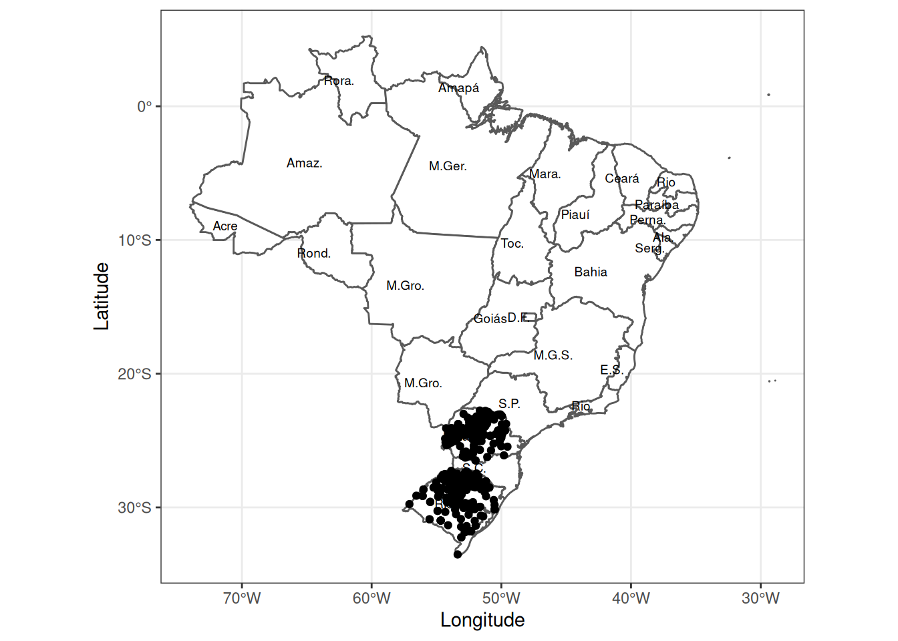
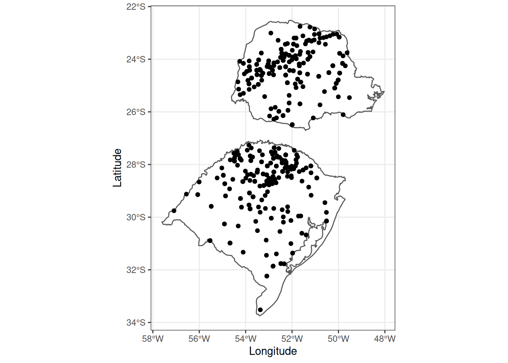
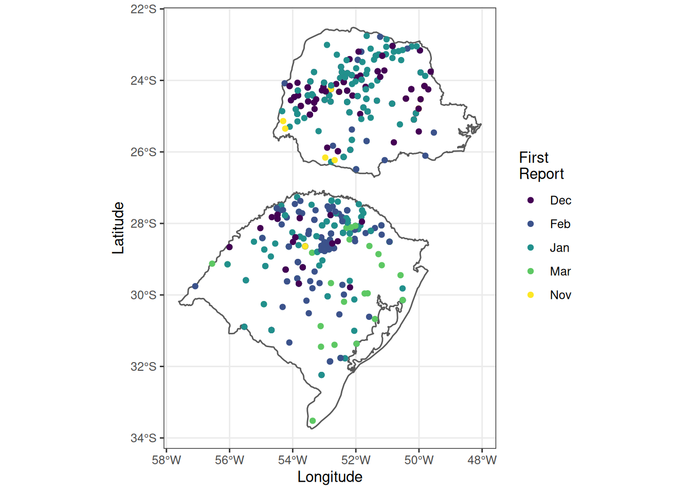
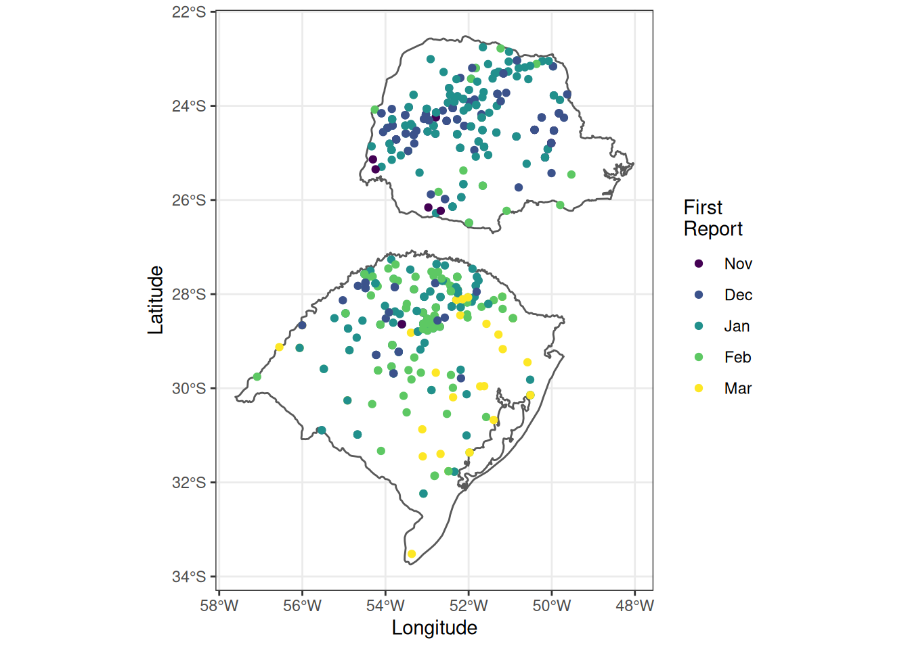
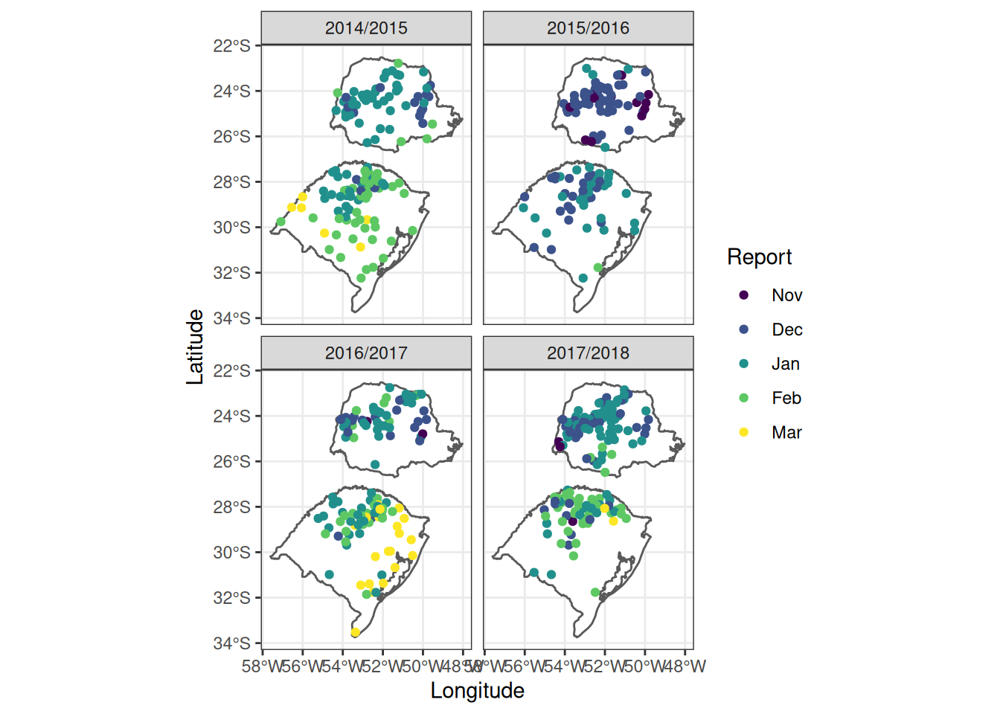

Chapter 3 Adding Points
3.1 Introduction
In many cases we may have a data set of interest that has georeferenced data (lat, lon values). Using the soybean rust observation data, add the points to the map of Brazil.
3.2 Exercises
3.2.1 Import Soybean Rust Observations
We will load the tidyverse package for these next steps.
## Observations: 520
## Variables: 7
## $ season <chr> "2014/2015", "2014/2015", "2014/2015", "2014/2015", …
## $ location <chr> "Alto Piquiri", "Alvorada do Sul", "Arapoti", "Arroi…
## $ lat <dbl> -24.028, -22.780, -24.158, -32.238, -24.420, -31.331…
## $ lon <dbl> -53.441, -51.231, -49.827, -53.087, -53.521, -54.107…
## $ state <chr> "PR", "PR", "PR", "RS", "PR", "RS", "PR", "PR", "RS"…
## $ date_report <date> 2015-01-16, 2015-02-04, 2014-12-12, 2015-02-25, 201…
## $ month <chr> "Jan", "Feb", "Dec", "Feb", "Jan", "Feb", "Dec", "Ja…3.2.2 Add Soybean Rust Observations to Our ggplot2 Object
Using geom_point() we can add points from the CSV file of observation data to the map of Brazil that we have already created.

That is not too clear. Perhaps it would be better to just plot the two states, rather than the whole country.
Filter the br_sf object to create a new object of only these two states.
## Simple feature collection with 2 features and 83 fields
## geometry type: MULTIPOLYGON
## dimension: XY
## bbox: xmin: -57.6117 ymin: -33.74228 xmax: -48.03249 ymax: -22.52173
## epsg (SRID): 4326
## proj4string: +proj=longlat +ellps=WGS84 +towgs84=0,0,0,0,0,0,0 +no_defs
## featurecla scalerank adm1_code diss_me iso_3166_2 wikipedia
## 1 Admin-1 scale rank 2 BRA-612 612 BR-RS <NA>
## 2 Admin-1 scale rank 2 BRA-613 613 BR-PR <NA>
## iso_a2 adm0_sr name name_alt name_local type type_en
## 1 BR 1 Rio Grande do Sul <NA> <NA> Estado State
## 2 BR 1 Paraná <NA> <NA> Estado State
## code_local code_hasc note hasc_maybe region region_cod provnum_ne
## 1 <NA> BR.RS <NA> <NA> <NA> <NA> 12
## 2 <NA> BR.PR <NA> <NA> <NA> <NA> 13
## gadm_level check_me datarank abbrev postal area_sqkm sameascity
## 1 1 20 1 Rio RS 0 NA
## 2 1 20 1 Paraná PR 0 NA
## labelrank name_len mapcolor9 mapcolor13 fips fips_alt woe_id
## 1 2 17 5 7 BR23 <NA> 2344864
## 2 2 6 5 7 BR18 <NA> 2344859
## woe_label woe_name latitude longitude
## 1 Rio Grande do Sul, BR, Brazil Rio Grande do Sul -29.7277 -53.6560
## 2 Parana, BR, Brazil Paraná -24.6618 -51.3228
## sov_a3 adm0_a3 adm0_label admin geonunit gu_a3 gn_id
## 1 BRA BRA 2 Brazil Brazil BRA 3451133
## 2 BRA BRA 2 Brazil Brazil BRA 3455077
## gn_name gns_id gns_name
## 1 Estado do Rio Grande do Sul -666687 Rio Grande do Sul, Estado do
## 2 Estado do Parana -659430 Parana, Estado do
## gn_level gn_region gn_a1_code region_sub sub_code gns_level gns_lang
## 1 1 <NA> BR.23 <NA> <NA> 1 kor
## 2 1 <NA> BR.18 <NA> <NA> 1 por
## gns_adm1 gns_region min_label max_label min_zoom wikidataid name_ar
## 1 BR23 <NA> 3.7 8.5 3 Q40030 <NA>
## 2 BR18 <NA> 3.7 8.5 3 Q15499 <NA>
## name_bn name_de name_en name_es
## 1 <NA> Rio Grande do Sul Rio Grande do Sul Río Grande del Sur
## 2 <NA> Paraná Paraná Paraná
## name_fr name_el name_hi name_hu name_id
## 1 Rio Grande do Sul <NA> <NA> Río Grande del Sur Rio Grande do Sul
## 2 Paraná <NA> <NA> Paraná Paraná
## name_it name_ja name_ko name_nl name_pl
## 1 Rio Grande do Sul <NA> <NA> Rio Grande do Sul Rio Grande do Sul
## 2 Paraná <NA> <NA> Paraná Parana
## name_pt name_ru name_sv name_tr
## 1 Rio Grande do Sul <NA> Rio Grande do Sul Rio Grande do Sul
## 2 Paraná <NA> Paraná Paraná
## name_vi name_zh ne_id geometry
## 1 Rio Grande do Sul <NA> 1159307911 MULTIPOLYGON (((-56.90637 -...
## 2 Paraná <NA> 1159307913 MULTIPOLYGON (((-54.35843 -...Using the new object with only Rio Grande do Sul and Paraná, create a new map with the soybean rust observations.
Note the use of the data call in both geom_sf() and geom_point() so that it is possible to mix different data sources in the same map.
ggplot() +
geom_sf(data = rgs_pa, fill = "white") +
geom_point(data = sbr, aes(x = lon, y = lat)) +
xlab("Longitude") +
ylab("Latitude") +
theme_bw()
To show more information about the soybean rust outbreaks, we can use colours in the points.
ggplot() +
geom_sf(data = rgs_pa, fill = "white") +
geom_point(data = sbr, aes(x = lon, y = lat, colour = month)) +
scale_color_viridis_d("Report") +
xlab("Longitude") +
ylab("Latitude") +
theme_bw()
That is more useful, but we have multiple years and the months are not in order.
To correct this, we will modify the sbr object and make the “month” column a factor and reorder it to follow the soybean growing season.
sbr <-
sbr %>%
mutate(month = as_factor(month)) %>%
mutate(month = fct_relevel(month, c("Nov", "Dec", "Jan", "Feb", "Mar")))With the new data format, now plot the data.
ggplot() +
geom_sf(data = rgs_pa, fill = "white") +
geom_point(data = sbr, aes(x = lon, y = lat, colour = month)) +
scale_color_viridis_d("Report") +
xlab("Longitude") +
ylab("Latitude") +
theme_bw()
Now plotting the data again shows that the months are in the proper order but there are multiple seasons. We can use faceting to make the maps more clear and see patterns.
ggplot() +
geom_sf(data = rgs_pa, fill = "white") +
geom_point(data = sbr, aes(x = lon, y = lat, colour = month)) +
scale_color_viridis_d("Report") +
xlab("Longitude") +
ylab("Latitude") +
theme_bw() +
facet_wrap(. ~ season)
3.3 Your Turn
- Create a figure such that each state/year combination is represented in its own facet. Why might this not be idea?
- Create individual figures for each state faceted by year with month as the point colour.